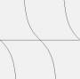

BASIC-256 Syntax Reference
Program Syntax
BASIC-256 programs consist of a series of statements separated by newlines, which are executed in order.
Numeric Constants
Numeric constants are any numeric characters, preceded by an optional minus sign to indicate negative numbers, and an optional decimal followed by more numeric characters to indicate floating point values.
Positive integer values may also be expressed in binary (base 2), octal (base 8), and hexadecimal (base 16). Precede binary values with 0b (0b1110 = 14), octal with 0o (0o177 = 127), and hexadecimal with 0x (0xff = 255).
String Constants
String constants are zero or more characters enclosed by double quotation marks(”).
Variables
Variables that hold numeric values must begin with a letter, and may consist of any number of alpha-numeric characters. They are case sensitive. They may be used interchangeably with numeric constants.
Variables that hold string values follow the same rules as numeric variables, but must end with a dollar sign ($). They may be used interchangeably with string constants.
When you assign a numeric value to a string variable or add a numeric value to a string (concatenate) the number will be automatically converted to a string before the operation is completed. A string value may not be assigned directly to a numeric variable or array element without manually converting it's type using the Int or Float functions.
| Variable Assignment | |||
|---|---|---|---|
| Operator | Name | Example | Comments |
| = | Assign a Number to a Numeric Variable | a = 9 | |
| = | Assign a String to a String Variable | z$ = “Hola.” | |
| = | Assign a Number to a String Variable | q$ = 9.9 | |
| += | Add to Numeric Variable | a += 7 | Same as a = a + 7 1 |
| += | Concatenate to String Variable | f$ += ”.” | Same as f$ = f$ + ”.” 1 |
| -= | Subtract from Numeric Variable | a -= 9 | Same as a = a - 9 1 |
| *= | Multiply Numeric Variable | a *= 2 | Same as a = a * 2 1 |
| /= | Divide Numeric Variable | a /= 8 | Same as a = a / 8 1 |
1 added with version 0.9.9.10
Arrays
Arrays are allocated using the DIM command or resided using Redim. They may hold numeric or string data. Access to specific elements in an array is accomplished by using square brackets along with the integer offset of the element, starting from zero. Arrays may also be dimensioned and accessed using two dimensions.
Array sizes may also be extracted using [?] [?,] and [,?] on the end of the array variable.
Example
print myarray[4]
will display on the screen the fifth element in 'myarray'
Anonymous Arrays
An anonymous array is a set of numeric values or a set of string values, separated by commas, and enclosed in braces {}. Anonymous array can be used to rapidly assign a group of values to an array. If the Anonymous array is longer than the dimensioned array then the array will be automatically re-dimensioned (Redim) to the correct length.
Anonymous Arrays can also be used in the Poly, Sound, and Stamp statements in place of an array variable.
Example
dim myarray(4)
myarray = {1, 2, 3, 4}
dim words$(1)
words$ = {"how","now","brown","cow"}
for n = 0 to words$[?]-1
print words$[n]
next n
Operators
The operators +, -, *, /, and ^ are used to perform addition, subtraction, multiplication, division, exponentiation of floating point and integer numbers. Valid operands are numeric constants and/or numeric variables.
The operators %, \, &, |, and ~ are used to calculate modulo, integer division, bitwise and, bitwise or, and bitwise negation (not) of integer expressions. Floating point numbers will be coverted to an integer value before calculation.
The = operator is used both for assignment to variables, and to test for equality. The + operator may be used to perform concatenation of any combination of string constants and string variables. The : operator can separate multiple statements on a single line. The ; operator suppresses the new line that is printed from a PRINT statement. The # operator is a shortcut for the Rem statement, and is interchangeable with it.
| Arithmetic Operators | |||
|---|---|---|---|
| Operator | Name | Example | Comments |
| + | Addition | a + b | add two numric values |
| - | Subtraction | a - b | subtract two numric values |
| * | Multiplication | a * b | |
| / | Division | a / b | Returns a decimal number of times that b goes into a. |
| \ | Integer Division | a b | Returns the number of whole times that b goes into a. |
| % | Modulo | a % b | Returns the remainder of the integer division of a and b. |
| ++ | Increment Prefix | ++a | Increment (add one) the the variable and return the value after the increment. (may be applied ONLY to numeric variables or array elements) 1 |
| ++ | Increment Suffix | a++ | Return the value of the variable and then increment the variable by one for the next time it is accessed. (may be applied ONLY to numeric variables or array elements) 1 |
| – | Decrement Prefix | –a | Decrement (subtract one) the the variable and return the value after the decrement. (may be applied ONLY to numeric variables or array elements) 1 |
| – | Decrrement Suffix | a– | Return the value of the variable and then decrement the variable by one for the next time it is accessed. (may be applied ONLY to numeric variables or array elements) 1 |
| Comparison Operators | |||
|---|---|---|---|
| Operator | Name | Example | Comments |
| = | Equal | a = b | Returns true of two values are equal |
| < | Less Than | a < b | |
| > | Greater Than | a > b | |
| <= | Less Than or Equal | a <= b | |
| >= | Greatet Than or Equal | a >= b | |
| <> | Not Equal | a <> b | |
| Logical Operators | |||
|---|---|---|---|
| Operator | Name | Example | Comments |
| NOT | Logical Negation | NOT a | |
| AND | Logical Conjunction | a AND b | |
| OR | Logical Disjunction | a OR b | |
| XOR | Logical Exclusive Disjunction | a XOR b | |
| Bitwise Operators | |||
|---|---|---|---|
| Operator | Name | Example | Comments |
| ~ | Bitwide Negation | ~a | |
| & | Bitwise Conjunction | a & b | |
| | | Bitwise Disjunction | a | b | Returns the bits of integer a or integer b. |
| String Operators | |||
|---|---|---|---|
| Operator | Name | Example | Comments |
| + | Concatenation | a$ + b$ | Appends b$ to the end of a$. |
| Order of Operations | ||
|---|---|---|
| Level | Operators | Category/Description |
| 1 | ( ) | Grouping |
| 2 | ^ | Exponent |
| 3 | - ~ | Unary Minus and Bitwise Negation (NOT) |
| 4 | * / \ | Multiplication and Division |
| 5 | % | Integer Remainder (Mod) |
| 6 | + - | Addition, Concatenation, and Subtraction |
| 7 | & | | Bitwise And and Bitwise Or |
| 8 | < ⇐ > >= = <> | Comparison (Numeric and String) |
| 9 | NOT | Unary Not |
| 10 | AND | Logical And |
| 11 | OR | Logical Or |
| 12 | XOR | Logical Exclusive Or |
1 new with version 0.9.9.10
Statements and Functions - Alphabetic
Abs
Format
abs ( expression )
Description
Returns the absolute value of a numeric expression.
Example
print abs(-45) print abs(6.45)
will print
45 6.45
Acos
Format
acos ( expression )
Description
Computes the arc-cosine of expression.Angles are expressed in radians (0 to 2pi).
See Also
Asc
Format
asc ( expression )
Description
Converts the first character in a string expression to an integer representing it's ASCII value.
| Asc | Chr | Asc | Chr | Asc | Chr | Asc | Chr | Asc | Chr | Asc | Chr |
|---|---|---|---|---|---|---|---|---|---|---|---|
| 32 | SPACE | 48 | 0 | 64 | @ | 80 | P | 96 | ` | 112 | p |
| 33 | ! | 49 | 1 | 65 | A | 81 | Q | 97 | a | 113 | q |
| 34 | “ | 50 | 2 | 66 | B | 82 | R | 98 | b | 114 | r |
| 35 | # | 51 | 3 | 67 | C | 83 | S | 99 | c | 115 | s |
| 36 | $ | 52 | 4 | 68 | D | 84 | T | 100 | d | 116 | t |
| 37 | % | 53 | 5 | 69 | E | 85 | U | 101 | e | 117 | u |
| 38 | & | 54 | 6 | 70 | F | 86 | V | 102 | f | 118 | v |
| 39 | ' | 55 | 7 | 71 | G | 87 | W | 103 | g | 119 | w |
| 40 | ( | 56 | 8 | 72 | H | 88 | X | 104 | h | 120 | x |
| 41 | ) | 57 | 9 | 73 | I | 89 | Y | 105 | i | 121 | y |
| 42 | * | 58 | : | 74 | J | 90 | Z | 106 | j | 122 | z |
| 43 | + | 59 | ; | 75 | K | 91 | [ | 107 | k | 123 | { |
| 44 | , | 60 | < | 76 | L | 92 | \ | 108 | l | 124 | | |
| 45 | - | 61 | = | 77 | M | 93 | ] | 109 | m | 125 | } |
| 46 | . | 62 | > | 78 | N | 94 | ^ | 110 | n | 126 | ~ |
| 47 | / | 63 | ? | 79 | O | 95 | _ | 111 | o | 127 | |
See Also
Example
print asc("A")
print asc("blue")
will print
65 98
New To Version
0.9.4
Asin
Format
asin ( expression )
Description
Computes the arc-sine of expression. Angles are expressed in radians (0 to 2pi).
See Also
Atan
Format
atan ( expression )
Description
Computes the arc-tangent of expression. Angles are expressed in radians (0 to 2pi).
See Also
Ceil
Format
ceil ( expression )
Description
Returns the lowest integer that is greater than or equal to expression.
See Also
Example
print ceil(9.1) print ceil(-5.4)
will print
10 -5
Changedir
Format
changedir expression
changedir ( expression )
Description
Change the current working directory to the path specified in expression. For all systems (including Windows) a forward slash (/) will be used to separate folders in a full path.
See Also
New To Version
0.9.6r
Chr
Format
chr ( expression )
Description
Converts the integer expression into a single character string expression with the ASCII value of the number. See asc for a complete ASCII character conversion chart.
See Also
Example
print chr(66)+chr(111)+chr(111)+chr(33)
will print
Boo!
New To Version
0.9.4
Circle
Format
circle x,y,r
Description
Draws a circle centered at x,y with a radius r using the current color.
Example
color blue rect 0,0,300,300 color red circle 100,100,50
draws

Clickb
Format
clickb
clickb ( )
Description
Returns the buttons that the user last clicked on the mouse (if over the graphic output). Returns 0 if no click has been recorded. If multiple buttons have been pressed the value is the sum of the values for all pressed buttons.
| Return Values | |
|---|---|
| Value | Mouse Button Pressed |
| 0 | None |
| 1 | Left |
| 2 | Right |
| 4 | Center |
See Also
Example
# clear any prior mouse click
clickclear
# wait for the user to click the mouse
print "click mouse on the graphics output"
while clickb = 0
pause .01
endwhile
# show where the user clicked
print "The user clicked at (" + clickx + "," + clicky + ")"
New To Version
0.9.4d
Clickclear
Format
clickclear
clickclear ( )
Description
Sets ClickB, Clickx, and Clicky to zero so that we can easily tell when the next mouse click is recorded.
See Also
Example
See sample program on Clickb.
New To Version
0.9.4d
Clickx
Format
clickx
clickx ( )
Description
Returns the mouse x location of the mouse pointer over the graphic output last time the user clicked a mouse button.
See Also
Example
See sample program on Clickb.
New To Version
0.9.4d
Clicky
Format
clicky
clicky ( )
Description
Returns the mouse y location of the mouse pointer over the graphic output last time the user clicked a mouse button.
See Also
Example
See sample program on Clickb.
New To Version
0.9.4d
Clg
Format
clg
Description
Clears the graphics output window.
Close
Format
close
close ( )
close filenumber
close ( filenumber )
Description
Closes an open file. If no file is open to that file number, this command does nothing. If the file number is not specified file number zero (0) will be used.
See Also
Cls
Format
cls
Description
Clears the text output window.
Color
Format
color colorname
color ( colorname )
color red, blue, green
color ( red, blue, green )
color rgb_value
color ( rgb_value )
Description
Sets the current drawing color to colorname; to RGB color made up of red, blue, green components; or to RGB value.
There is a special color named CLEAR, with a value of -1. If the current color is set to this value the pixels or shapes drawn will clear the pixels of the graphics output area and make them transparent. This is especially useful when creating sprites using the Spriteslice command.
| Color names and RGB values | |||
|---|---|---|---|
| Color Name | RGB Values | ||
| black | 0, 0, 0 | ||
| white | 255, 255, 255 | ||
| red | 255, 0, 0 | ||
| darkred | 128, 0, 0 | ||
| green | 0, 255, 0 | ||
| darkgreen | 0, 128, 0 | ||
| blue | 0, 0, 255 | ||
| darkblue | 0, 0, 128 | ||
| cyan | 0, 255, 255 | ||
| darkcyan | 0, 128, 128 | ||
| purple | 255, 0, 255 | ||
| darkpurple | 128, 0, 128 | ||
| yellow | 255, 255, 0 | ||
| darkyellow | 128, 128 ,0 | ||
| orange | 255, 102, 0 | ||
| darkorange | 176, 61 ,0 | ||
| grey | 164, 164 ,164 | ||
| darkgrey | 128, 128 ,128 | ||
| clear | -1 | ||
See Also
Example
clg color rgb(128,128,128) rect 0,0,graphwidth, graphheight color red circle 100,100,50 color 255,160,160 circle 100,100,25
Will draw a grey rectangle with a red circle with a pink middle.

New To Version
0.9.5m
Cos
Format
cos ( expression )
Description
Computes the cosine of expression. Expression must be in radians.
Note
The cos function does not produce an exact result.
See Also
Example
clg color black # draw a line across the graphic output line 0,150,300,150 # where do we start lastx = 0 lasty = cos(0) * 50 + 150 # now step across the line and draw for x = 0 to 300 step 5 angle = x / 300 * 2 * pi y = cos(angle) * 50 + 150 line lastx, lasty, x, y lastx = x lasty = y next x
Draws

Currentdir
Format
currentdir
currentdir ( )
Description
Returns the fully qualified path name to BASIC-256's current directory. For all systems (including Windows) a forward slash (/) will be used to separate folders in a full path.
See Also
New To Version
0.9.6r
Day
Format
day
day ( )
Description
Returns the current system clock's day of the month (1-31).
See Also
Example
print "today's date is "; print (month + 1) + "/" + day + "/" + year
will print|
today's date is 11/30/2009
New To Version
0.9.4
DBClose
Format
dbclose
dbclose ( )
dbclose DatabaseNumber
dbclose ( DatabaseNumber )
Description
Close an open SQLite database file. Database connections are numbered from 0 to 7. If the database number is omitted then database file #0 will be closed.
Example
See example of usage on DBOpen page.
See Also
External Links
More information about databases in general and SQLite specifically can be found at SQLite Home Page and SQL at Wikipedia.
History
0.9.6y - New
0.9.9.19 - Added ability to have 8 database connections
DBCloseSet
Format
dbcloseset
dbcloseset ( )
dbcloseset DatabaseNumber
dbcloseset ( DatabaseNumber )
dbcloseset DatabaseNumber , DataSetNumber
dbcloseset ( DatabaseNumber, DataSetNumber )
Description
Close the currently open record set opened by DBOpenSet.
Example
See example of usage on DBOpen page.
See Also
External Links
More information about databases in general and SQLite specifically can be found at SQLite Home Page and SQL at Wikipedia.
History
0.9.6y - New
0.9.9.19 - Added ability to have 8 database connections with 8 open data sets
DBExecute
Format
dbexecute SqlStatement
dbexecute ( SqlStatement )
dbexecute DatabaseNumber , SqlStatement
dbexecute ( DatabaseNumber , SqlStatement )
Description
Execute an SQL statement on the open SQLite database file. This statement does not create a record set.
Example
See example of usage on DBOpen page.
See Also
External Links
More information about databases in general and SQLite specifically can be found at SQLite Home Page and SQL at Wikipedia.
History
0.9.6y - New
0.9.9.19 - Added ability to have 8 database connections
DBFloat
Format
dbfloat ( ColumnNumber )
dbfloat ( DatabaseNumber , ColumnNumber )
dbfloat ( DatabaseNumber , DataSetNumber , ColumnNumber )
dbfloat ( ColumnName )
dbfloat ( DatabaseNumber , ColumnName )
dbfloat ( DatabaseNumber , DataSetNumber , ColumnName )
Description
Return a floating point (decimal value) from the specified column number or name of the current row of the open recordset. If the field is a NULL value the decimal number 0.0 will be returned. NULL may be tested for by using the DBNull function.
Example
See example of usage on DBOpen page.
See Also
External Links
More information about databases in general and SQLite specifically can be found at SQLite Home Page and SQL at Wikipedia.
History
0.9.6y - New
0.9.9.19 - Added ability to have 8 database connections with 8 open data sets
0.9.9.22 - Added column name or alias
DBInt
Format
dbint ( ColumnNumber )
dbint ( DatabaseNumber , ColumnNumber )
dbint ( DatabaseNumber , DataSetNumber , ColumnNumber )
dbint ( ColumnName )
dbint ( DatabaseNumber , ColumnName )
dbint ( DatabaseNumber , DataSetNumber , ColumnName )
Description
Return an integer value from the specified column number or name of the current row of the open recordset. If the field is a NULL value the integer number 0 will be returned. NULL may be tested for by using the DBNull function.
Example
See example of usage on DBOpen page.
See Also
External Links
More information about databases in general and SQLite specifically can be found at SQLite Home Page and SQL at Wikipedia.
History
0.9.6y - New
0.9.9.19 - Added ability to have 8 database connections with 8 open data sets
0.9.9.22 - Added column name or alias
DBOpen
Format
dbopen SQLiteFile
dbopen ( SQLiteFile )
dbopen DatabaseNumber , SQLiteFile
dbopen ( DatabaseNumber , SQLiteFile )
Description
Open an SQLite database file. If the file does not exist then create it. Up to eight database connections can be made at a time in a program. If the database number is not specified then connection 0 will be used.
Example
#database foo - create a database, populate a table, open a recordset and read data from table. # create a new database file or open it dbopen "dbtest.sqlite3" # delete old foo table - trap error if new database onerror errortrap dbexecute "drop table foo;" offerror # create and populate dbexecute "create table foo (id integer, words text, value decimal);" dbexecute "insert into foo values (1,'one',3.14);" dbexecute "insert into foo values (2,'two',6.28);" dbexecute "insert into foo values (3,'three',9.43);" # open a recordset and loop through the rows of data dbopenset "select * from foo order by words;" while dbrow() print dbint(0) + dbstring(1) + dbfloat(2) end while dbcloseset # wrap everything up dbclose end errortrap: # accept error - display nothing - return to next statement return
will display
1one3.14 3three9.43 2two6.28
See Also
External Links
More information about databases in general and SQLite specifically can be found at SQLite Home Page and SQL at Wikipedia.
History
0.9.6y - New 0.9.9.19 - Added ability to have 8 database connections
DBOpenset
Format
dbopenset SqlStatement
dbopenset ( SqlStatement )
dbopenset DatabaseNumber , SqlStatement
dbopenset ( DatabaseNumber , SqlStatement )
dbopenset DatabaseNumber , DataSetNumber , SqlStatement
dbopenset ( DatabaseNumber , DataSetNumber , SqlStatement )
Description
Perform an SQL statement and create a record set so that the program may loop through and use the results.
Example
See example of usage on DBOpen page.
See Also
External Links
More information about databases in general and SQLite specifically can be found at SQLite Home Page and SQL at Wikipedia.
History
0.9.6y - New
0.9.9.19 - Added ability to have 8 database connections with 8 open data sets
DBRow
Format
dbrow
dbrow ( )
dbrow ( DatabaseNumber )
dbrow ( DatabaseNumber , DataSetNumber )
Description
Function that advances the record set to the next row. Returns a true value if there is a row or false if we are at the end of the record set.
Example
See example of usage on DBOpen page.
See Also
External Links
More information about databases in general and SQLite specifically can be found at SQLite Home Page and SQL at Wikipedia.
History
0.9.6y - New
0.9.9.19 - Added ability to have 8 database connections with 8 open data sets
DBString
Format
dbstring ( ColumnNumber )
dbstring ( DatabaseNumber , ColumnNumber )
dbstring ( DatabaseNumber , DataSetNumber , ColumnNumber )
dbstring ( ColumnName )
dbstring ( DatabaseNumber , ColumnName )
dbstring ( DatabaseNumber , DataSetNumber , ColumnName )
Description
Return a string from the specified column number or name of the current row of the open recordset. If the field is a NULL value the empty string ”” will be returned. NULL may be tested for by using the DBNull function.
Example
See example of usage on DBOpen page.
See Also
External Links
More information about databases in general and SQLite specifically can be found at SQLite Home Page and SQL at Wikipedia.
History
0.9.6y - New
0.9.9.19 - Added ability to have 8 database connections with 8 open data sets
0.9.9.22 - Added column name or alias
Degrees
Format
degrees ( expression )
Description
 Converts an angle in radians to degrees.
Converts an angle in radians to degrees.
See Also
Dim
Format
dim numericvariable ( integer )
dim stringvariable$ ( integer )
dim numericvariable ( rows , columns )
dim stringvariable$ ( rows , columns )
Description
Returns a newly created single dimensional array of length integer or a 2 dimensional array thst can be addressed by row and column. Depending on the variable assignment, a string or numerical array is created.
The first element of an array has an index of 0 (zero). Indexes range from 0 to length-1.
See Also
Example
dim z(5)
z = {1, 2, 3, 4, 5}
print z[0] + " " + z[4]
will print
1 5
Example Two
dim c$(4)
c$ = {"cow", "brow", "how", "now"}
print c$[2] + " " + c$[3] + " ";
print c$[1] + " " + c$[0] + "?"
will print
how now brown cow?
End
Format
end
Description
Halts program execution.
Example
print "I am done." end print "Or am I?"
will print
I am done.
Eof
Format
eof
eof()
eof(filenumber)
Description
Returns a binary flag (true/false) that will signal if we have read to the End Of File (EOF). If file number is not specified then file number zero (0) will be used.
See Also
New To Version
0.9.4
Exists
Format
exists ( expression )
Description
Returns a binary flag (true/false) that will signal if the file path specified by the expression exists.
See Also
New To Version
0.9.4
FastGraphics
Format
fastgraphics
Description
Turns fastgraphics mode on, until the program is halted. Fastgraphics mode means that the graphics display is not updated until a REFRESH command is issued. It can be used to significantly speed up complex animations and eliminate flicker.
Note
When doing animation, it's recommended to do all of your drawing commands in subroutines and use a single REFRESH command after all drawing has been done for that frame.
See Also
Float
Format
float ( expression )
Description
Convert expression to a floating point (decimal) number. Float will convert a string or an integer to a decimal value. If the expression can not be converted then a zero will be returned.
See Also
New To Version
0.9.4
Floor
Format
floor ( expression )
Description
Returns the greatest integer that is less than or equal to expression
See Also
Font
Format
font fontname, point, weight
Description
Sets the font used by the text command to fontname. Size is defined in points (1/72”) Weight represents a number from 1 to 100 that defines how dark the letters will be drawn. Light=25, Normal=50, and Bold=75.
Example
color grey rect 0,0,graphwidth,graphheight color red font "Times New Roman",18,50 text 10,100,"This is Times New Roman" color darkgreen font "Tahoma",28,100 text 10,200,"This is BOLD!"
Will draw.

See Also
New To Version
0.9.4
GetColor
Format
getcolor
getcolor()
Description
Returns the RGB value of the current drawing color (last set by color statement). RGB is calculated by taking ((red * 256) + green * 256) + blue where red, green, and blue are between 0 and 255. If the drawing color has been set to CLEAR a -1 will be returned.
See Also
Example
color red print getcolor
will print
16711680
New To Version
0.9.5m
GetSlice
Format
getslice(x, y, width, height)
Description
Return a string that contains a Hexadecimal representation of the rectangle defined by the parameters. String is formatted as first 4 bytes - width, next 4 bytes - height, 6 bytes for each pixel (width * height).
See Also
New To Version
0.9.6b
Goto
Format
goto label
Description
Jumps to the specified label.
See Also
Example
print "I"; goto skipit print " don't"; skipit: # print " want cookies."
will print
I want cookies.
Notes
As of version 0.9.9.2 Goto, Gosub, and labels can not be used in Function and Subroutine definitions.
Graphheight
Format
graphheight
graphheight()
Description
Returns the height (y dimension) of the current graphics display window.
See Also
New To Version
0.9.3
Graphsize
Format
graphsize x_expression, y_expression
Description
Changes the size of the graphics display window and redraws the BASIC256 application.
See Also
New To Version
0.9.3
Graphwidth
Format
graphwidth
graphwidth()
Description
Returns the width (x dimension) of the current graphics display window.
See Also
New To Version
0.9.3
Hour
Format
hour
hour()
Description
Returns the current system clock's hour of the day (0-23).
Example
# display nice date
dim months$(12)
months$ = {"January", "February", "March", "April", "May", "June", "July", "August", "September", "October", "November", "December"}
print year + "-" + months$[month] + "-" + right("0" + day, 2)
# display pretty time
h = hour
if h > 12 then
h = h - 12
ampm$ = "PM"
else
ampm$ = "AM"
end if
if h = 0 then h = 12
print right("0" + h, 2) + "-" + right("0" + minute, 2) + "-" + right("0" + second, 2) + " " + ampm$
Will print something like.
2010-July-15 10-00-02 PM
See Also
New To Version
0.9.4
Instr
Format
instr ( haystack , needle )
instr ( haystack , needle , start )
instr ( haystack , needle , start , caseinsensitive)
Description
Check to see if the string needle is contained in the string haystack. If it is, then this function will return the index of starting character of the first place where needle occurs. Otherwise, this function will return 0. You may also specify an optional starting location for the search to begin start and a boolean value caseinsensitive to specify that the search will treat upper and lower case letters the same.
Note
String indices begin at 1.
Example
print instr("Hello", "lo")
print instr("101,222,333",",",5)
will display
4 8
Version
0.9.6.55
Int
Format
int ( expression )
Description
Convert expression to an integer (whole) number. Int will convert a string or a float to an integer value. If the expression can not be converted then a zero will be returned.
See Also
Imgload
Format
imgload x, y, filename
imgload x, y, scale, filename
imgload x, y, scale, rotation, filename
Description
Load an image or picture from a file and paint it on the Graphics Output Window.
The parameters x and y represent the location on the screen for the CENTER of the loaded image. This behaviour is different than all of the other graphics statements. The axis of rotation will also be this CENTER point.\\The Imgload starement will read in most common image file formats including: BMP (Windows Bitmap), GIF (Graphic Interchange Format),JPG/JPEG (Joint Photographic Experts Group), and PNG (Portable Network Graphics).
Optionally scales size of the loaded image by the defined scale (1=normal size). Also optionally rotates the image by a specified angle around the images center (clockwise in radians).
See Also
New To Version
0.9.6l
Input
Format
input expression, stringvariable
input expression, numericvariable
input stringvariable
input numericvarvariable
Description
Waits for the user to type a line of text into the text output window. When the user hits the enter or return key, the line is read in to stringvar or numericvariable.
User may optionally be prompted for the input by expression.
If a numeric variable is specified and non-numeric data is entered a zero will be assigned to the numeric variable.
References to array elements may also be specified.
Key
Format
key
key()
Description
Immediately returns an integer value corresponding to the currently pressed keyboard key. If no key has been pressed since the last call to the key function then the number zero (0) will be returned.
Note
if key = 47 then print key
will not display the desired results, because it's calling key twice in succession, and will return different values each time. This code will do what you want:
a = key if a = 47 then print a
LastError
Format
lasterror
lasterror ( )
Description
Returns the last runtime error number.
Example
See example of usage on Error Codes page.
See Also
New To Version
0.9.6z
LastErrorExtra
Format
lasterrorextra
lasterrorextra ( )
Description
Returns statement specific “extra” information about the error.
Example
See example of usage on Error Codes page.
See Also
New To Version
0.9.6z
LastErrorLine
Format
lasterrorline
lasterrorline ( )
Description
Returns the line number in the program where the runtime error happened.
Example
See example of usage on Error Codes page.
See Also
New To Version
0.9.6z
Left
Format
left( string, length)
Description
Returns a portion of the specified string, starting from the first character on the left and continuing for length characters.
See Also
Example
print left("Hello", 2)
will display
He
New To Version
0.9.5b
Length
Format
length( string )
Description
Returns the number of characters in string
Line
Format
line x0, y0, x1, y1
line(x0, y0, x1, y1)
Description
Draws a line from the point x0,y0 to the point x1, y1.
Example
color white rect 0,0,300,300 color black line 50,50,200,200 line 100,200,200,200 line 100,200,50,50
draws

Log
Format
log ( expression )
Description
Return the base e lograthim of expression.
See Also
New To Version
0.9.5w
Lower
Format
lower( string)
Description
Returns string with all alphabetic characters converted to lower case.
See Also
New To Version
0.9.5e
Mid
Format
mid( string, start character, length)
Description
Returns a portion of the specified string, starting from the start character, and continuing for length characters.
See Also
Example
print mid("Hello", 2, 3)
will display
ell
Minute
Format
minute
minute()
Description
Returns the current system clock's minute of the hour (0-59).
Example
# display nice date
dim months$(12)
months$ = {"January", "February", "March", "April", "May", "June", "July", "August", "September", "October", "November", "December"}
print year + "-" + months$[month] + "-" + right("0" + day, 2)
# display pretty time
h = hour
if h > 12 then
h = h - 12
ampm$ = "PM"
else
ampm$ = "AM"
end if
if h = 0 then h = 12
print right("0" + h, 2) + "-" + right("0" + minute, 2) + "-" + right("0" + second, 2) + " " + ampm$
Will print something like.
2010-July-15 10-00-02 PM
See Also
New To Version
0.9.4
Month
Format
month
month()
Description
Returns the current system clock's month. January is 0, February is 1… December is 11.
Example
cls
dim n$(12)
n$ = {"Jan", "Feb", "Mar", "Apr", "May", "Jun", "Jul", "Aug", "Sep", "Oct", "Nov", "Dec"}
print day + "-" + n$[month] + "-" + year
on New Years will display
1-Jan-2010
See Also
New To Version
0.9.4
Mouseb
Format
mouseb
mouseb()
Description
Returns the buttons that currently pressed on the mouse (if over the graphic output). Returns 0 if no click has been recorded. If multiple buttons have been pressed the value is the sum of the values for all pressed buttons.
| Return Values | |
|---|---|
| Value | Mouse Button Pressed |
| 0 | None |
| 1 | Left |
| 2 | Right |
| 4 | Center |
See Also
New To Version
0.9.4d
Mousex
Format
mousex
mousex()
Description
Returns the current or last mouse x location of the mouse pointer over the graphic output.
See Also
New To Version
0.9.4d
Mousey
Format
mousey
mousey()
Description
Returns the current or last mouse y location of the mouse pointer over the graphic output.
See Also
New To Version
0.9.4d
NetClose
Format
netclose
netclose ( )
netclose socket_number
netclose ( socket_number )
Description
Close the specified network connection (socket). If socket_number is not specified socket number zero (0) will be used.
Example
See example of usage on NetConnect page.
See Also
New To Version
0.9.6.31
NetConnect
Format
netconnect server_name, port_number
netconnect ( server_name, port_number )
netconnect socket_number, server_name, port_number
netconnect ( socket_number, server_name, port_number )
Description
Open a network connection (client) to a server. The IP address or host name of a server are specified in the server_name argument, and the specific network port number in the port_number argument. If socket_number is not specified socket number zero (0) will be used.
Example
Open two instances of BASIC-256 on a single computer. Paste the “server” code into one and the “client” code into the other. Run the server first and the client second. You can see how the messages are sent back and forth between the two different processes.
Server Code
# get a message and send back success
print "wait for connection on " + netaddress()
netlisten 9997
print "got connection"
do
while not netdata
pause .1
print ".";
end while
n$ = netread
print n$
netwrite "I got '" + n$ + "'."
until n$ = "end"
netclose
will display (where xxx.xxx.xxx.xxx is the IPv4 address of your computer)
wait for connection on xxx.xxx.xxx.xxx got connection .1 Hi There ....2 Hi There ........3 Hi There ..........4 Hi There .....5 Hi There .......6 Hi There ....7 Hi There ..........8 Hi There ....9 Hi There .....10 Hi There .end
Client Code
# have the user enter a message and send it to the server input "enter message?", m$ netconnect "127.0.0.1", 9997 for t = 1 to 10 pause rand netwrite t + " " + m$ print netread next t netwrite "end" print netread netclose
will display
enter message?Hi There I got '1 Hi There'. I got '2 Hi There'. I got '3 Hi There'. I got '4 Hi There'. I got '5 Hi There'. I got '6 Hi There'. I got '7 Hi There'. I got '8 Hi There'. I got '9 Hi There'. I got '10 Hi There'. I got 'end'.
See Also
New To Version
0.9.6.31
NetData
Format
netdata
netdata ( )
netdata socket_number
netdata ( socket_number )
Description
Returns a true value (1) of there is data waiting to be read in using the NetRead function, else returns false (0). If socket_number is not specified socket number zero (0) will be used.
Example
See example of usage on NetConnect page.
See Also
New To Version
0.9.6.31
NetListen
Format
netlisten port_number
netlisten ( port_number)
netlisten socket_number, port_number
netlisten ( socket_number, port_number)
Description
Open up a network connection (server) on a specific port address and wait for another program to connect. If socket_number is not specified socket number zero (0) will be used.
Example
See example of usage on NetConnect page.
See Also
New To Version
0.9.6.31
NetRead
Format
netread
netread ( )
netread ( socket_number )
Description
Read data from the specified network connection and return it as a string. This function will wait until data is received. If socket_number is not specified socket number zero (0) will be used.
Example
See example of usage on NetConnect page.
See Also
New To Version
0.9.6.31
NetWrite
Format
netwrite string
netwrite ( string )
netwrite socket_number, string
netwrite ( socket_number, string )
Description
Send a string to the specified open network connection. If socket_number is not specified socket number zero (0) will be used.
Example
See example of usage on NetConnect page.
See Also
New To Version
0.9.6.31
Open and Openb
Format
open filename
open(filename)
open filenumber, filename
open(filenumber, filename)
openb filename
openb(filename)
openb filenumber, filename
openb(filenumber, filename)
Description
Opens a file for reading and writing. The filename is specified as a string, and may be an absolute or relative path. If the file number is not specified file number zero (0) will be used.
Openb opens the file in a “binary safe” mode. This type of file open is recommended for files where the Readbyte and Writebyte statements are used for input/output.
Note
BASIC256 may have up to 8 files open at a single time. The files are numbered from 0 to 7. Opening a file to a number while another is already open to that number will close the open file.
See Also
OffError
Format
offerror
Description
Turns off error trapping and restores the default error behavior.
Example
See example of usage on Error Codes page.
See Also
New To Version
0.9.6z
OnError
Format
onerror label
Description
Causes the Gosub at label to be executed or Subroutine to be called when an runtime error occurs. Program control may be resumed at the next statement with a Return statement in the subroutine.
Example
See example of usage on Error Codes and ThrowError pages.
See Also
New To Version
0.9.6z
Pause
Format
pause seconds
pause (seconds)
Description
Halts execution for the specified number of seconds. The seconds value may be a decimal value, so sub-second precision is possible.
Pixel
Format
pixel (x, y )
Description
Returns the RGB value of the pixel at the x and y coordinate. If the pixels has not been set since the last Clg command or was drawn with the color CLEAR a -1 will be returned.
See Also
New To Version
0.9.5m
Plot
Format
plot x, y
plot ( x, y )
Description
Changes the pixel located at x,y in the graphics output window to the current color.
Poly
Format
poly numeric array variable
poly {x1, y1, x2, y2, x3, y3 …}
Description
Draws a polygon. The sides of the polygon are defined by the values stored in the array, which should be stored as x,y pairs, sequentially. The length of the array/2 will define the number of points. A polygon may also be specified using an Anonymous Array (list of x,y pairs enclosed in curly braces {}).
Note
The number of points in the array argument was removed from the poly statement in version 0.9.4.
See Also
Example
# using an array
color blue
rect 0,0,300,300
color green
dim tri(1)
tri = {100, 100, 200, 200, 100, 200}
poly tri
# using an anonymous array
color blue
rect 0,0,300,300
color green
poly {100, 100, 200, 200, 100, 200}
Both programs use the poly statement to draw the following:

Format
print expression [ ; ]
Description
Writes text to the text output window, appending a new line. If the optional semicolon is included, no new line is appended.
See Also
PutSlice
Format
putslice x, y, slice$
putslice x, y, slice$, transparent color
Description
Put the graphics stored in the slice string on the screen at x,y. If a transparent color is specified then do not plot points of that color in the slice.
See Also
New To Version
0.9.6b
Radians
Format
radians ( expression )
Description
Converts an angle in degrees to radians.
See Also
Rand
Format
rand
rand()
Description
Returns a random number between 0 and 1. The distribution of the values is uniform.
Note
To produce random numbers between other values, simple multiply or add the appropriate numbers. For example, to generate an integer between 0 and 10, use int(rand * 10).
Read
Format
read
read()
read(filenumber)
Description
Reads and returns a token from an open file. A token is any string of characters that is separated by a space, tab, or newline character. If the file number is not specified file number zero (0) will be used.
See Also
Readline
Format
readline
readline()
readline(filenumber)
Description
Reads and returns an entire line from an open file. If the file number is not specified file number zero (0) will be used.
See Also
Rect
Format
rect x,y,width,height
rect ( x, y, width, height )
Description
Draws a width x height pixel rectangle using the current color. The top left corner is located at x,y.
Example
color white rect 0,0,300,300 color red rect 50,50,150,150 color blue rect 100,100,150,150 color green rect 10,140,280,20
draws

Redim
Format
redim numericvariable( integer )
redim stringvariable$( integer )
redim numericvariable( rows , columns )
redim stringvariable$( rows , columns )
Description
Re-sizes a previously created array, preserving data. If an array is enlarged then the new elements will be initialized with zero or the empty string. If an array is reduced in size the elements trimmed from the end are lost.
See Also
New To Version
0.9.5t
Refresh
Format
refresh
Description
Updates the graphics output window to show all drawing since the previous refresh command. Refresh only works in Fastgraphics mode
See Also
Rem
Format
rem comment
# comment
Description
Line comment. A line beginning with REM (or the shortened #) is ignored.
Reset
Format
reset
reset()
reset(filenumber)
Description
Clears an open file. All data stored in the file is lost. If the file number is not specified file number zero (0) will be used.
See Also
Rgb
Format
rgb(red, green, blue )
Description
Returns the RGB value of the color made up of the red, green, and blue components. Legal values for red, greem, and blue are 0 to 255.
See Also
New To Version
0.9.5m
Right
Format
right( string, length)
Description
Returns a portion of the specified string, starting from the last length characters from the right end of the of the string.
See Also
Example
print right("Hello", 2)
will display
lo
New To Version
0.9.5b
Say
Format
say expression
say ( expression )
Description
Uses the the system Text to Speech (TTS) engine to say the expression. In LINUX the FLite or eSpeak libraries are required. In Windows the current default SAPI voice will be used.
Notes
Windows SAPI will use the default voice you have defined on your control panel. To change the default for Linux/Mac using the ESpeak library you need to copy the desired voice file to the name default.
# Statements to set default language to 'fr' on Ubuntu 10.10 # Your system may be different cd /usr/share/espeak-data/voices sudo cp fr default
New To Version
0.9.4
Second
Format
second
second()
Description
Returns the current system clock's second of the current minute (0-59).
Example
# display nice date
dim months$(12)
months$ = {"January", "February", "March", "April", "May", "June", "July", "August", "September", "October", "November", "December"}
print year + "-" + months$[month] + "-" + right("0" + day, 2)
# display pretty time
h = hour
if h > 12 then
h = h - 12
ampm$ = "PM"
else
ampm$ = "AM"
end if
if h = 0 then h = 12
print right("0" + h, 2) + "-" + right("0" + minute, 2) + "-" + right("0" + second, 2) + " " + ampm$
Will print something like.
2010-July-15 10-00-02 PM
See Also
New To Version
0.9.4
Seek
Format
seek location
seek ( location )
seek filenumber, location
seek ( filenumber, location )
Description
Moves the read/write location to a specific location (offset in bytes from the start of the file) within an open file. If the file number is not specified file number zero (0) will be used.
See Also
New To Version
0.9.4
Sin
Format
sin ( expression )
Description
Computes the sine of expression. Expression must be in radians.
Note
The sin function does not produce an exact result.
See Also
Example
clg color black # draw a line across the graphic output line 0,150,300,150 # where do we start lastx = 0 lasty = sin(0) * 50 + 150 # now step across the line and draw for x = 0 to 300 step 5 angle = x / 300 * 2 * pi y = sin(angle) * 50 + 150 line lastx, lasty, x, y lastx = x lasty = y next x
Draws

Size
Format
size
size()
size(filenumber)
Description
Returns the length, in bytes, of an opened file. If the file number is not specified file number zero (0) will be used.
See Also
New To Version
0.9.4
Sound
Format
sound frequency, duration
sound ( frequency, duration )
sound ( array )
sound array
sound {frequency1, duration1, frequency2, duration2, …}
Description
Play a sound from the computer's speakers.Frequency is expressed in Hz and duration is expressed in milliseconds (1000 in a second). An array or list containing frequency and durations may also be passed. This eliminates any clicking between sounds when more than one is being output sequentially. Sound support for LINUX systems was added in version 0.9.5g. Sound was changed to use the default sound device in Windows in version 0.9.5h
See Also
Spritecollide
Format
spritecollide ( sprite1, sprite2)
Description
Function returns true if the two sprites are colliding. The Spritecollide function assumes that the sprites are bounded by a rectangle the size of the loaded image. Collision is calculated by using these rectangles. For round or oddly shaped sprites this function may over detect collision.
See Also
Spritedim, Spriteh, Spritehide, Spriteload, Spritemove, Spriteplace, Spriteshow, Spriteslice, Spritev, Spritew, Spritex, Spritey
New To Version
0.9.6n
Spritedim
Format
spritedim n
spritedim ( n )
Description
Create n sprite placeholders in memory. Sprites are accessed in your program by a sprite number from 0 to n-1.
See Also
Spritecollide, Spriteh, Spritehide, Spriteload, Spritemove, Spriteplace, Spriteshow, Spriteslice, Spritev, Spritew, Spritex, Spritey
New To Version
0.9.6n
Spriteh
Format
spriteh ( spritenumber )
Description
Returns the height, in pixels, of a loaded sprite.
See Also
Spritecollide, Spritedim, Spritehide, Spriteload, Spritemove, Spriteplace, Spriteshow, Spriteslice, Spritev, Spritew, Spritex, Spritey
New To Version
0.9.6n
Spritehide
Format
spritehide spritenumber spritehide ( spritenumber )
Description
Hides a sprite. All image and position information is retained.
See Also
Spritecollide, Spritedim, Spriteh, Spriteload, Spritemove, Spriteplace, Spriteshow, Spriteslice, Spritev, Spritew, Spritex, Spritey
New To Version
0.9.6n
Spriteload
Format
spriteload spritenumber, filename
spriteload ( spritenumber, filename )
Description
Load an image or picture from a file and save it as a sprite. The sprite will be active and movable but will not display on the screen until the Spriteshow statement is executed for that sprite.\\The Spriteload statement will read in most common image file formats including: BMP (Windows Bitmap), GIF (Graphic Interchange Format),JPG/JPEG (Joint Photographic Experts Group), and PNG (Portable Network Graphics).
See Also
Spritecollide, Spritedim, Spriteh, Spritehide, Spritemove, Spriteplace, Spriteshow, Spriteslice, Spritev, Spritew, Spritex, Spritey
New To Version
0.9.6n
Spritemove
Format
spritemove spritenumber, dx, dy
spritemove ( spritenumber, dx, dy )
spritemove spritenumber, x, y, s
spritemove ( spritenumber, x, y, s )
spritemove spritenumber, x, y, s, r
spritemove ( spritenumber, x, y, s, r )
Description
Move a sprite from its current position by the specified number of pixels. Motion will be limited to the current screen. Optionally the sprite may be rotated or scaled by defining optional the r and s parameters. The degree r is measured in radians. Rotation and scaling are relative to the previous state of the sprite.
See Also
Spritecollide, Spritedim, Spriteh, Spritehide, Spriteload, Spriteplace, Spriteshow, Spriteslice, Spritev, Spritew, Spritex, Spritey
New To Version
0.9.6n
Rotate and scale new to 0.9.9.15
Spriteplace
Format
spriteplace spritenumber, x, y
spriteplace ( spritenumber, x, y )
spriteplace spritenumber, x, y, s
spriteplace ( spritenumber, x, y, s )
spriteplace spritenumber, x, y, s, r
spriteplace ( spritenumber, x, y, s, r )
Description
Place the center of a sprite at a specific location on the screen (x,y). Like Imgload sprite positioning is relative to the center of the sprite and not the top left corner as with most other graphical statements.
Optionally the sprite may be rotated or scaled by defining optional the r and s parameters. The degree r is measured in radians.
See Also
Spritecollide, Spritedim, Spriteh, Spritehide, Spriteload, Spritemove, Spriteshow, Spriteslice, Spritev, Spritew, Spritex, Spritey
New To Version
0.9.6n
rotate and scale 0.9.9.15
Spriteshow
Format
spriteshow spritenumber
spriteshow ( spritenumber )
Description
Show a hidden sprite.
See Also
Spritecollide, Spritedim, Spriteh, Spritehide, Spriteload, Spritemove, Spriteplace, Spriteslice, Spritev, Spritew, Spritex, Spritey
New To Version
0.9.6n
Spriteslice
Format
spriteslice spritenumber, x, y, width, height
spriteslice ( spritenumber, x, y, width, height )
Description
Copy the rectangular region of the screen with it's top left corner represented by x and y of the specified height and width and create a sprite. The sprite will be active and movable but will not be visible until the Spriteshow statement is executed. It is recommended that you execute the Clg command before drawing and slicing the sprite. All unpainted pixels will be transparent when the sprite is drawn on the screen. Transparent pixels may also be set by drawing with the color CLEAR.
See Also
Spritecollide, Spritedim, Spriteh, Spritehide, Spritemove, Spriteplace, Spriteshow, Spritev, Spritew, Spritex, Spritey
New To Version
0.9.6o
Spritev
Format
spritev ( spritenumber )
Description
Returns true if the sprite is visible.
See Also
Spritecollide, Spritedim, Spriteh, Spritehide, Spriteload, Spritemove, Spriteplace, Spriteshow, Spriteslice, Spritex, Spritey
New To Version
0.9.6o
Spritew
Format
spritew ( spritenumber )
Description
Returns the width, in pixels, of a loaded sprite.
See Also
Spritecollide, Spritedim, Spriteh, Spritehide, Spriteload, Spritemove, Spriteplace, Spriteshow, Spriteslice, Spritev, Spritex, Spritey
New To Version
0.9.6n
Spritex
Format
spritex ( spritenumber )
Description
Returns the x coordinate of the center of a loaded sprite.
See Also
Spritecollide, Spritedim, Spriteh, Spritehide, Spriteload, Spritemove, Spriteplace, Spriteshow, Spriteslice, Spritev, Spritew, Spritey
New To Version
0.9.6n
Spritey
Format
spritey ( spritenumber )
Description
Returns the y coordinate of the center of a loaded sprite.
See Also
Spritecollide, Spritedim, Spriteh, Spriteload, Spritemove, Spriteplace, Spriteshow, Spriteslice, Spritev, Spritew, Spritex
New To Version
0.9.6n
Stamp
Format
stamp x, y, array
stamp x, y, {x1, y1, x2, y2, x3, y3 …}
stamp x, y, scale, array
stamp x, y, scale, {x1, y1, x2, y2, x3, y3 …}
stamp x, y, scale, rotation, array
stamp x, y, scale, rotation, {x1, y1, x2, y2, x3, y3 …}
Description
Draws a polygon with top left corner (origin) at x, y. Optionally scales size of polygon by the defined scale (1=normal size). Also optionally rotates the polygon by a specified angle around the origin (clockwise in radians). The sides of the polygon are defined by the values in an array, which should be stored as x,y pairs, sequentially. The length of the array/2 will define the number of points. A stamped polygon can also be specified using a list of x,y pairs enclosed in curly braces {}.
See Also
Example
Both of the code blocks below will draw a pair of green triangles on the graphics window:
clg
color blue
rect 0,0,300,300
color green
dim tri(6)
tri = {0, 0, 100, 100, 0, 100}
# stamp the triangle at 0,0 (full size)
stamp 100, 100, tri
# stamp the triangle at 200,100 (half size)
stamp 200, 100, .5, tri
clg
color blue
rect 0,0,300,300
color green
# stamp the triangle at 0,0 (full size)
stamp 100, 100, {0, 0, 100, 100, 0, 100}
# stamp the triangle at 200,100 (half size)
stamp 200, 100, .5, {0, 0, 100, 100, 0, 100}
Both programs will draw:

New To Version
0.9.4
String
Format
string ( expression )
Description
Returns the string representation of a number.
See Also
System
Format
system expression
system ( expression )
Description
Execute a system command in a terminal window. WARNING: This can be a very dangerous statement. Only use it if you know what you are doing.
This statement may be disabled because of potential system security issues. Availability may be configured in the IDE by going to the Edit>Preferences menu.
New To Version
0.9.5h
Tan
Format
tan ( expression )
Description
Computes the tangent of expression. Expression must be in radians.
Note
The tan function does not produce an exact result.
See Also
Example
clg color black # draw a line across the graphic output line 0,150,300,150 # where do we start lastx = 0 lasty = tan(0) * 50 + 150 # now step across the line and draw for x = 0 to 300 step 5 angle = x / 300 * 2 * pi y = tan(angle) * 50 + 150 line lastx, lasty, x, y lastx = x lasty = y next x
Draws 
{kind=link}
Text
Format
text x, y, string
text ( x, y, string )
Description
Paints a text string on the Graphics Output Window at x, y using the current color and font.
Example
color grey rect 0,0,graphwidth,graphheight color red font "Times New Roman",18,50 text 10,100,"This is Times New Roman" color darkgreen font "Tahoma",28,100 text 10,200,"This is BOLD!"
Will draw.
See Also
New To Version
0.9.4
Upper
Format
upper ( string )
Description
Returns string with all alphabetic characters converted to upper case.
See Also
Example
print upper("BlUe!")
will display
BLUE!
New To Version
0.9.5e
Volume
Format
volume level
volume ( level )
Description
Adjust the volume of the notes played with the Sound command. Volume levels must be numeric values from 0 to 10. The default volume is 5.
See Also
New To Version
0.9.5i
WAVplay
Format
wavplay filename
wavplay ( filename )
Description
Play WAV audio file asynchronously (in the background).
See Also
New To Version
0.9.4
WAVstop
Format
wavstop
Description
Stop playing the current asynchronous (background) WAV audio file.
See Also
New To Version
0.9.4
Write
Format
write string
write ( string )
write filenumber, string
write ( filenumber, string )
Description
Writes string to the end of an open file. If the file number is not specified file number zero (0) will be used.
See Also
Writeline
Format
writeline string
writeline ( string )
writeline filenumber, string
writeline ( filenumber, string )
Description
Writes string append with a newline character to the end of an open file. If the file number is not specified file number zero (0) will be used.
See Also
New To Version
0.9.4
Year
Format
year
year ( )
Description
Returns the current system clock's 4 digit year.
Example
print "today's date is "; print (month + 1) + "/" + day + "/" + year
will display
today's date is 11/30/2009
See Also
New To Version
0.9.4